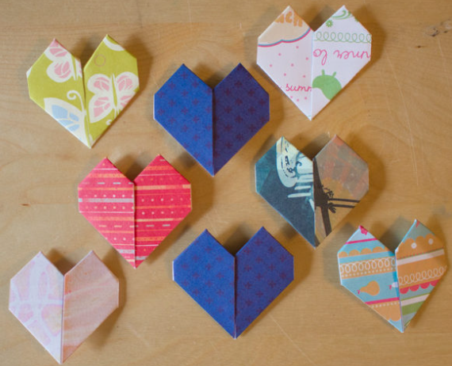
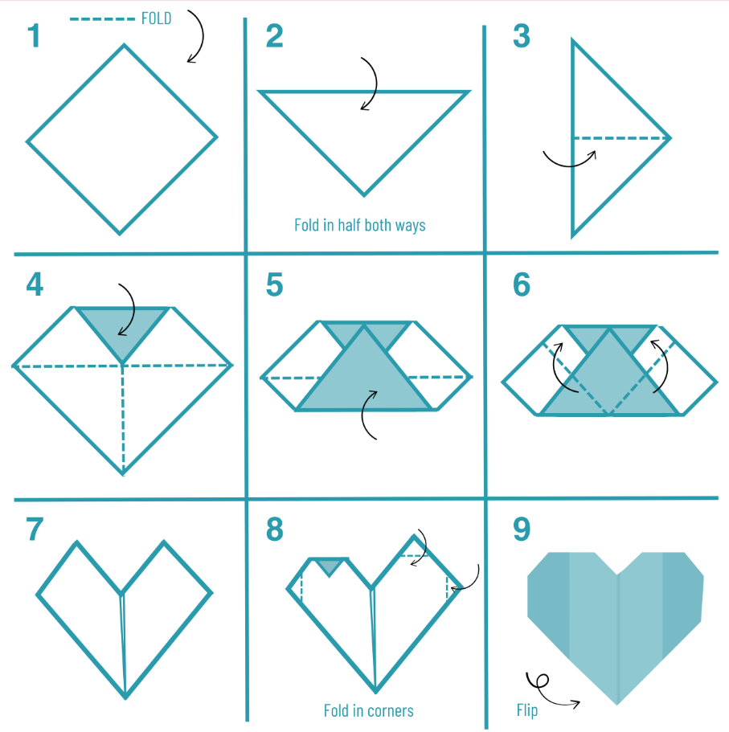

Origami Heart Tutorial

If you're looking for a simple and thoughtful fold, an origami heart is always a good place to start. You can use a variety of papers and decorations to create the heart, and attach it to a keychain or magnet.
via origami.me
You'll need…
Instructions
- Start with the white side of the paper facing up. Fold the paper in half vertically, then unfold it to create a center crease.
- Fold the paper in half horizontally, then unfold again.
- Fold the bottom edge up to meet the center crease.
- Turn the paper over.
- Fold the bottom edges diagonally upward so they meet the vertical center crease.
- Turn the paper over.
- Fold the top left edge diagonally downward to meet the vertical center crease. Repeat on the right side.
- Fold the top flap down, leaving the white triangles on the sides unfolded. Continue folding the flap down while gently lifting the white triangles to avoid creasing them.
- Fold the white triangles inward along the crease lines where the white side and colored side of the paper meet.
- Fold all four top corners downward to meet the crease created in Step 8.
- Fold the top two corners down to create points. There are no exact reference points, so fold them the way you like.
- Turn the paper over. Your origami heart is complete!
